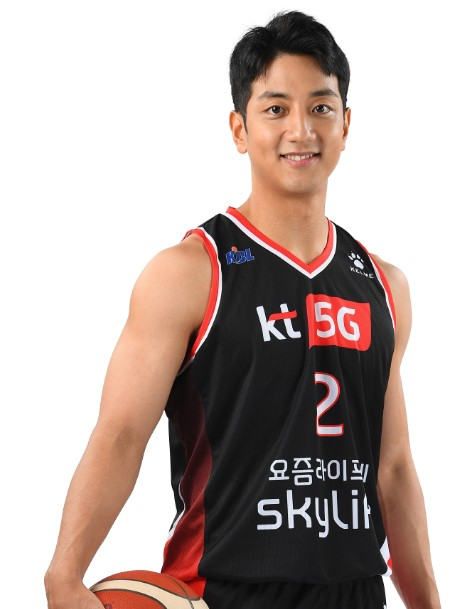
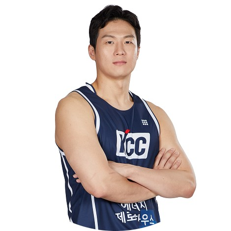

스타 선수를 아무리 모아도 모래알팀을 벗어나지 못하던 SK를 문경은, 전희철 두 지도자와 함께 속공의 팀으로 바꾸어 놓은, 팀 컬러와 역사를 바꾸어 놓은 프랜차이즈 스타이기도 하다.스피드와 돌파력, 덩크는 그를 상징하는 능력이다.
역대급 스피드를 바탕으로 상당히 독특하고 빠른 드리블, 유로스텝, 짝스텝과 같은 현란한 스텝이 더해져 돌파 코스를 틀어막기가 매우 까다롭다.
트리플스렛보다는 관성을 살려 치고 달리는 오픈코트에 강점을 보이는 경향이 있다. 자세와 드리블이 높지만 스피드를 살린 부지런한 움직임과 변칙적인 리듬의 드리블로 이를 만회했다. 또한 년차가 쌓일수록 드리블, 스텝, 마무리 스킬셋이 다듬어지고 세트오펜스 상황에서도 수비를 허무는 능력이 완숙해져 슬래셔로서의 면모도 갖추고 있다.
특히 언더핸드 슛을 올려놓는 감각은 타의 추종을 불허할 정도이다. 핑거롤, 플로터, 더블클러치 등 한국에서 보기 힘든 스킬을 구사하면서 도저히 각도가 안 나오는 위치나 상황에서도 림에 빨려들어가는 모습으로 감탄을 자아낸다.
허훈
고교 시절부터 아버지의 농구 재능을 형인 허웅보다 더 많이 물려받았다는 평가를 받았다. 더군다나 허재 감독의 현역 시절 몸이 연상될 정도로 신장은 작지만 웨이트가 매우 잘 갖춰져 몸의 밸런스가 상당히 좋다. 스피드 역시 빠른편이기 때문에 좋은 피지컬과 어우러져 나오는 돌파능력은 허훈의 장점이다. 또한 리딩, 시야, 패스, 등 기본기가 잘 갖춰져 있고 원드리블 점퍼, 미들레인지 풀업 점퍼, 3점슛 등 슈팅에 있어서 다양한 옵션을 장착하고 있다. 클러치 능력 또한 장점이다. 접전상황, 승부처에서 해결하는 능력은 아버지 허재 감독의 강심장을 그대로 빼다 박았다는 평가이다.
좋은 위력을 발휘하고 있는 돌파와 미드레인지 점퍼를 넘어 원투 3점 점퍼가 장점이다. 2년차부터는 35% 수준으로 3점슛 성공률을 끌어올였다. 경기당 2개 정도의 메이드를 시킬 정도로 허훈에게는 3점이 중요한 공격 옵션이 되었으며 한 게임에서 9개 연속 3점슛 성공을 기록하기도 했다. 게다가 초기엔 3점을 와이드 오픈에서만 던지는 경향이 강했지만, 해를 거듭하며 다양한 스킬셋을 갖추기 시작하며 막기가 더욱 까다로워졌으며 수비를 앞에 두고도 여유있게 3점슛을 던지는 모습을 보였다.
본인의 매치업 상대는 돌파던 슈팅이던 농락할 수 있는 개인기를 갖추고 있다. 본인 매치업을 붕괴시킨 뒤에 많은 공격 옵션을 만들어낸다.


이정현
아마시절 부터 악바리 근성이 뛰어났고, 에이스 롤을 부여받았던 선수라 '수비가 앞에 붙으면 일단 쏘고 안 들어가면 욕 한번 먹지 뭐'라는 마인드로 과감한 플레이를 한다. 연대시절에는 포워드에 가까웠지만 프로에서는 가드 포지션으로 뛰게 되었다. 풀타임 주전으로 처음 데뷔한 2010-11시즌 때부터 꾸준한 득점력을 보여줬다. 연차가 쌓이며 공격력과 더불어 패싱력, 시야까지 두루두루 갖추더니 2016-17 시즌에 기량이 만개했다는 평가. 2번치고 키도 크고 웨이트도 뛰어나서 상대 2번을 피지컬로 압도할 수 있다. 또한 준수한 볼핸들링과 스텝을 갖추고 있기 때문에 이를 활용한 뛰어난 돌파능력과 학창시절 빅맨출신 인지라 포스트업도 뛰어나기 때문에 상대 매치업을 포스트업으로도 찍어눌러버리는 등 KBL 슈팅 가드 중 최고의 피지컬을 갖춘 선수 중 하나. 수비자를 달고도 터프샷을 과감하게 시도하는 편이며, 그 성공률 또한 괜찮은 수준이다. 최고의 장점으로는 필요한 상황에서 공을 어떻게든 메이드 시키는 능력이 뛰어나다는 점. 신체 접촉이 있는 상황에서도 어떻게든 슛을 던진다. 특히 승부처에서도 긴장하지 않고 자신있게 슛을 시도한다.
허웅
기본적으로 슈팅력이 매우 좋다. 3점슛 캐치앤샷, 무빙샷, 스텝백 등 스킬이 다양하고 정확도 또한 준수하다. 거기에 드리블 테크닉도 괜찮은 편에 스피드도 빠른 편이라 돌파능력도 갖추고 있기 때문에 슛 셀렉션이 매우 다양하다는 것이 허웅의 장점.
더군다나 데뷔 시절 얄상한 몸도 상무에 가서 7~8kg 증량, 현재는 80kg까지 체격을 키워 단점이었던 웨이트 역시 많이 개선되었다. 국가대표팀에서는 주로 식스맨으로 나서면서 김선형과 호흡을 맞추는데, 수비에서 약점을 보이기도 했지만 특유의 폭발적인 스피드와 슈팅력으로 공격을 극대화시키는 역할을 한다. 현재 국가대표팀의 팀 컬러가 그와 잘 맞는 것도 있다.
또한 크게 부각되지 않는 부분이지만 자유투가 매우 좋다. 현역 선수들 중 최고수준으로, 15-16시즌 성공률 88.46%으로 자유투왕에도 올랐으며 데뷔 시즌 자유투 75.47%를 제외하고는 매해 80% 이상의 확률 높은 자유투 성공률을 기록하고 있다. 기록이 보여주듯 20-21 시즌 종료 기준 통산 83.4% 가량의 높은 성공률을 기록하고 있다.
아버지를 닮은 강심장이라 그런지 힘든 경기에서 큰 역할을 한다. 클러치 타임 마다 강한 모습을 보여 DB의 공격을 주도하며 팀을 이끌고 있다.